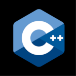

Tecnologías
- 

Soy un generalista que disfruta de siempre estar aprendiendo cosas nuevas sobre cada aspecto que llame mi atención. Desde el deporte, la salud, finanzas, relaciones, espiritualidad y por supuesto mi ámbito profesional. Yo soy Baruc Murguia. Ingeniero en informática Full stack developer con conocimientos en múltiples lenguajes de programación, bases de datos, API's, Servidores, administracion de redes etc. En esta página puedes hechar un vistazo a algunos de mis proyectos y las tecnologias con las que fueron desarrollados.